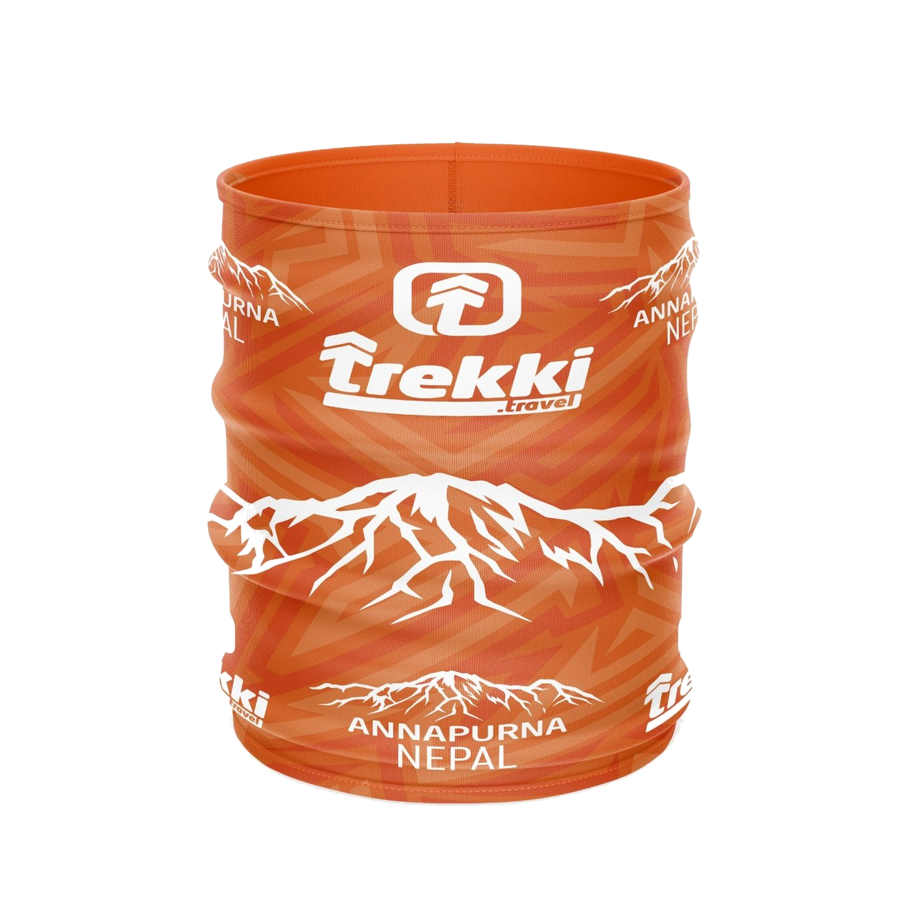
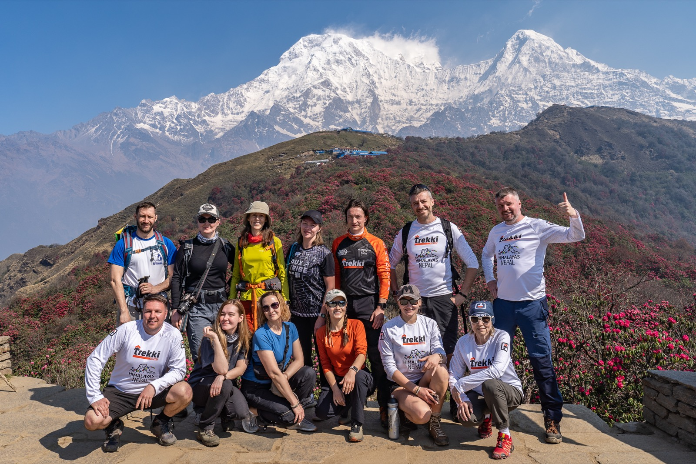
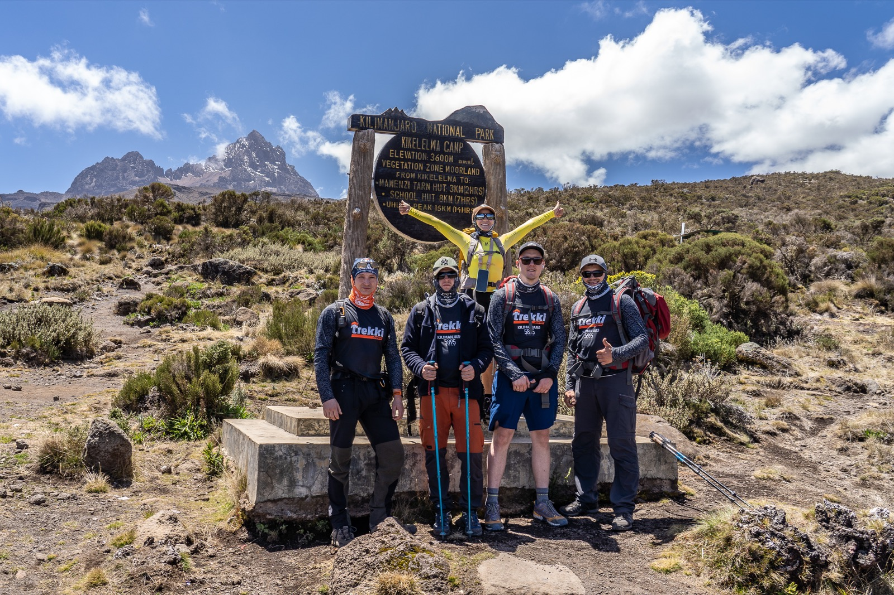
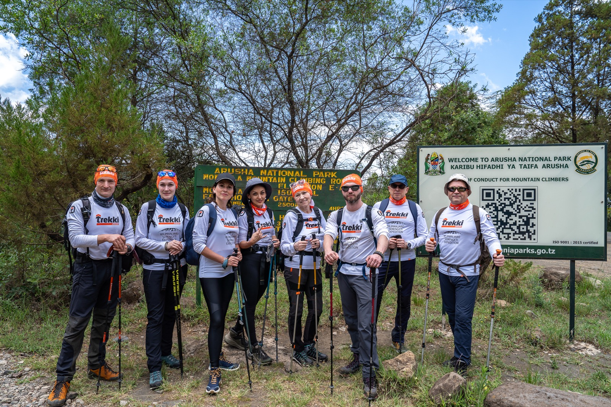
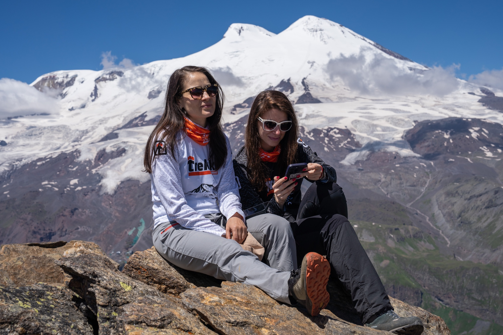

Дизайн под маршрут или старт
Футболка, лонгслив или баф с готовой графикой: гора, маршрут, дата события, название клуба или символ команды.
Собираем короткую подборку вещей под ваше событие: принты, медали, бафы и мерч, который участникам легко выбрать.
Под конкретный принт, маршрут, старт или событие можно собрать короткую подборку, чтобы участникам было легко выбрать нужную вещь без большого каталога.
Футболка, лонгслив или баф с готовой графикой: гора, маршрут, дата события, название клуба или символ команды.
Небольшой сувенир для участников похода, забега или клубного выезда: не вместо формы, а как вещь с историей.
Когда у человека уже есть футболка, можно предложить баф, новый принт, медаль или комплект к прошлой поездке.
Небольшая брендированная деталь для мерча и подборок: этикетка помогает вещи выглядеть собранной, а не случайным сувениром.
Готовый дизайн можно адаптировать под изделие: один и тот же маршрут или событие может жить на футболке, лонгсливе и бафе.



Фотографии с маршрутов показывают, как принт, баф или футболка становятся частью поездки, старта и общей истории команды.




Нужно только понять, что именно хотим предложить участникам. Дальше мы помогаем привести выбор к понятному формату.
| Шаг | Что решаем | Что получает участник |
|---|---|---|
| Идея | Маршрут, событие, клуб, принт, медаль или комплект. | Понятную историю вещи: зачем она и к какому событию относится. |
| Изделия | Футболка, лонгслив, баф, медаль, этикетка или несколько вариантов. | Выбор без лишнего шума: только то, что реально можно сделать. |
| Размеры и тираж | Размерная сетка, ориентировочное количество, сроки и город доставки. | Понятную заявку без длинной переписки и уточнений вразнобой. |
| Заказ | Финальный макет, ткань, способ принта и сроки изготовления. | Вещь, которая выглядит как часть события, а не случайный сувенир. |